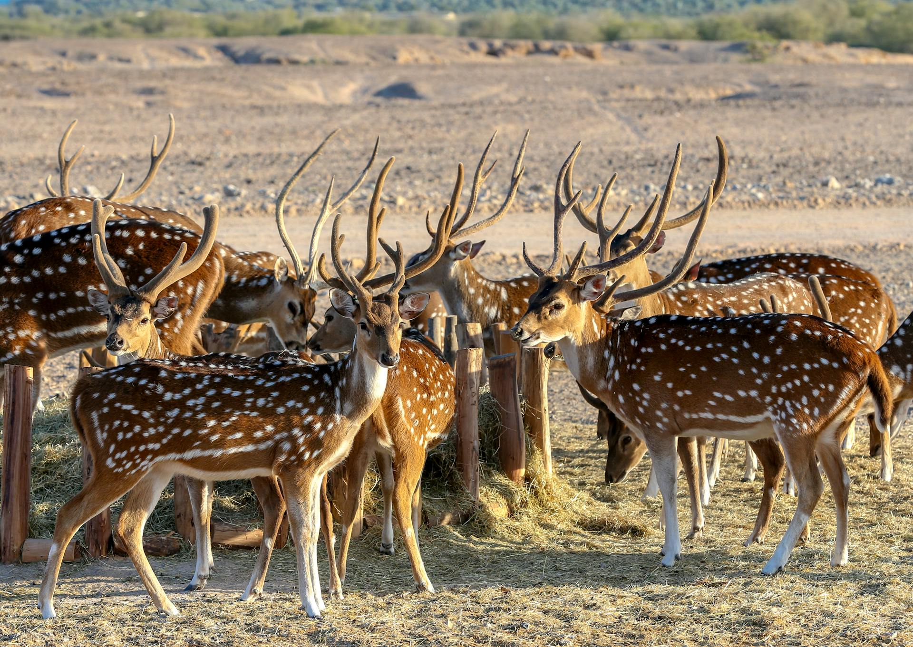
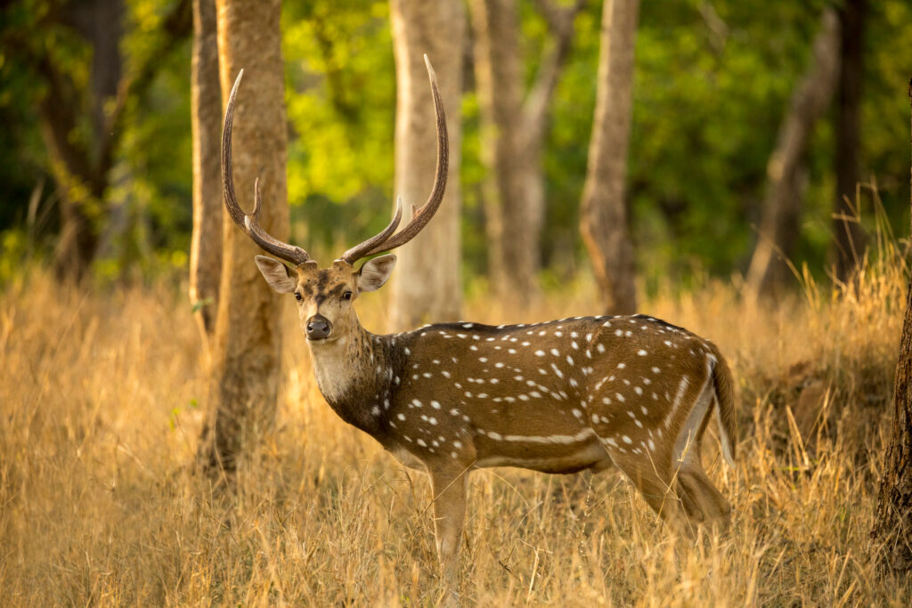
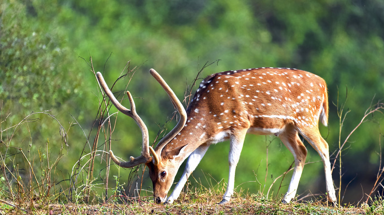
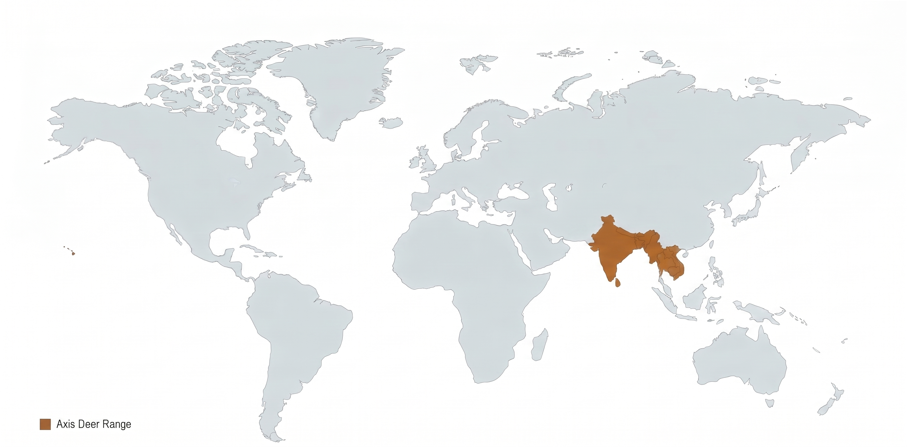

Axis
Axis axis
O cervo-axis (Axis axis), também conhecido como cervo-pintado, é considerado por muitos um dos cérvidos mais bonitos e elegantes do mundo. Distingue-se de imediato pela sua impressionante pelagem avermelhada ou castanha-dourada que se mantém permanentemente salpicada de distintas manchas brancas ao longo de toda a vida adulta. Dotado de uma compleição esguia, membros longos e finas hastes tripartidas nos machos, este animal alia uma grande graciosidade de movimentos a uma enorme agilidade, permitindo-lhe escapar com facilidade por entre a vegetação rasteira dos seus habitats de origem.
Habitat Natural

O cervo-axis habita preferencialmente florestas abertas, zonas de bosque caducifólio e savanas arborizadas que alternem com clareiras de pastagem e mantenham sempre fontes de água doce por perto. Estes animais evitam florestas densas e fechadas, preferindo áreas onde a luz solar penetra e promove o crescimento de ervas tenras, além de contarem com a proteção de árvores frondosas para se abrigarem do calor intenso. Embora seja originário do subcontinente indiano, adaptou-se com enorme sucesso a várias regiões temperadas e subtropicais pelo mundo.
Dieta
O cervo-axis é um herbívoro ruminante de dieta mista e altamente adaptável, alternando entre o pastoreio e a dentição de folhagem. Cerca de 60% a 70% da sua alimentação diária é composta por ervas frescas e rebentos tenros, sendo complementada por folhas de arbustos, flores, casca macia e frutos caídos no solo. A sua atividade de alimentação concentra-se habitualmente nas horas mais frescas do dia, como o amanhecer e o entardecer, aproveitando a noite ou o meio-dia para ruminar em segurança na companhia do grupo.
Curiosidades
- Ao contrário de muitas outras espécies de veados cujas crias perdem as pintas brancas ao crescer, o cervo-axis conserva orgulhosamente a sua pelagem salpicada durante toda a vida adulta.
- Vivem em complexas manadas sociais que podem reunir de dezenas a centenas de indivíduos, mantendo frequentemente uma estreita relação de interajuda e alerta com bandos de macacos.
- Os machos não possuem uma época de reprodução estritamente fixa, podendo desenvolver e perder as suas hastes ossificadas em diferentes alturas do ano consoante as condições locais.
Os nossos Axis
No Zoo Jonçela, um grupo dinâmico de cervos-axis — encabeçado pelo elegante macho Rajah e acompanhado pelas fêmeas Maya e Tara — atrai a atenção de todos os visitantes pela sua constante atividade. Com 5 anos de idade, o Rajah ostenta um par de hastes robustas com três pontas e mede cerca de 1,4 metros de comprimento, pesando perto de 80 kg. A Maya e a Tara, ambas com 3 anos, apresentam uma compleição mais leve e ágil, pesando cerca de 50 kg cada. O grupo partilhe um espaçoso prado arborizado que recria o seu habitat natural, demonstrando uma convivência pacífica e curiosa.